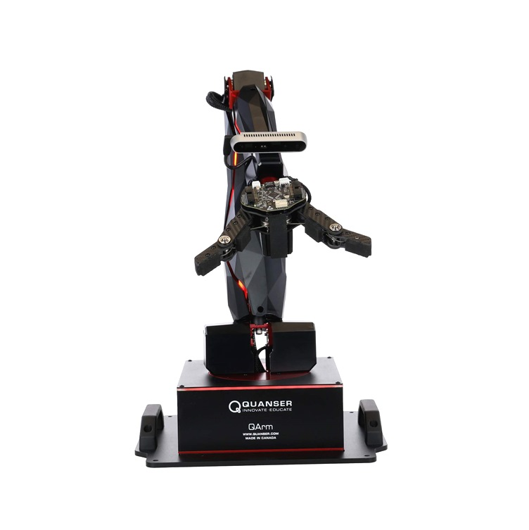
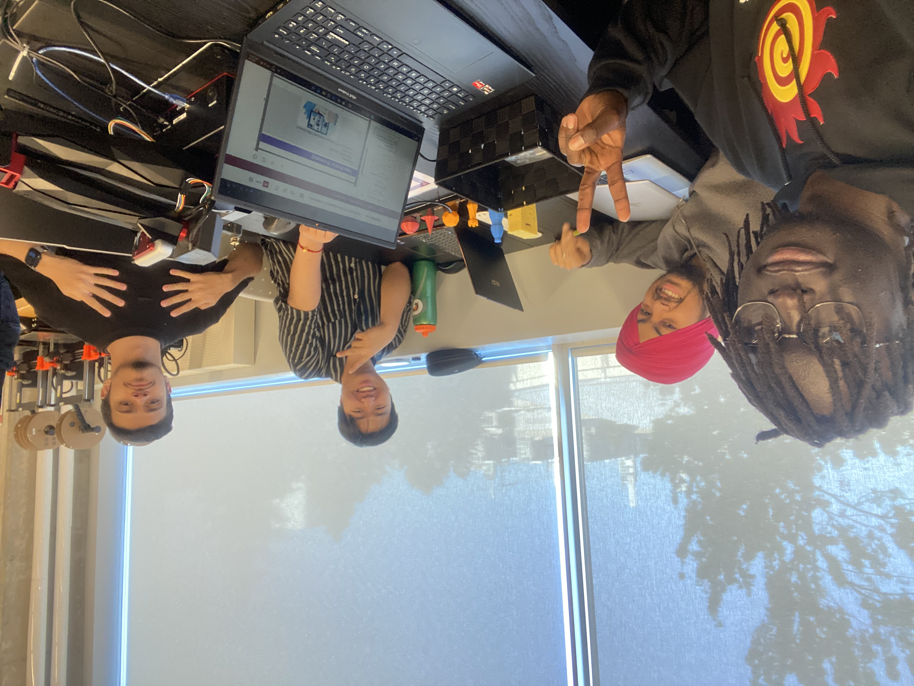

- Design and CAD a mechanical end effector that mounts to a Quanser Arm.
- Develop software to determine products to be packaged, and for control of the robotic arm's movement.
- Engineer a system that authenticates users, scans packages, computes costs, and packs them efficiently.
figure 1 - The Quanser Arm (Qarm)

My Role
- Lead the Python programming by assembling and testing our team functions to optimize performance and ensure proper documentation.
- Managed the software verification and integration process by debugging the overall system, guaranteeing a working product.
- Advised on the mechanical design by proposing feautures from my individual Autodesk Inventor CAD model.
figure 1 - A snippet from my lookup_products() function
Reflection
- Questioning my initial design approach caused me to pivot to a simpler, and more reliable final CAD model.
- If I could redo this project, I would focus more on time management to make sure all features of the project were tested and working on time.
- Overall, I learned much about teamwork in an engineering context, and I can't wait to apply these skills in future projects!
figure 1 - A photo of the team :)

1P13 - Project 3
Objective
- Design and CAD a mechanical end effector that mounts to a Quanser Arm.
- Develop software to determine products to be packaged, and for control of the robotic arm's movement.
- Engineer a system that authenticates users, scans packages, computes costs, and packs them efficiently.
Objective - In Depth
The end effector needed to securely grasp various payload shapes without dropping them during transit. We utilized rapid prototyping with 3D printing to test different claw geometries. The software stack was built in Python, integrating computer vision to identify boxes on a turntable, calculate their dimensions, and sort them into appropriate bins using inverse kinematics.
(Add as much text as needed here to test the scrolling feature. modal will handle it)
figure 1 - The Quanser Arm (Qarm)
Role
- Design and CAD a mechanical end effector that mounts to a Quanser Arm.
- Develop software to determine products to be packaged, and for control of the robotic arm's movement.
- Engineer a system that authenticates users, scans packages, computes costs, and packs them efficiently.
Role - In Depth
The end effector needed to securely grasp various payload shapes without dropping them during transit. We utilized rapid prototyping with 3D printing to test different claw geometries. The software stack was built in Python, integrating computer vision to identify boxes on a turntable, calculate their dimensions, and sort them into appropriate bins using inverse kinematics.
(Add as much text as needed here to test the scrolling feature. modal will handle it)
figure 1 - The Quanser Arm (Qarm)
Reflection
- Design and CAD a mechanical end effector that mounts to a Quanser Arm.
- Develop software to determine products to be packaged, and for control of the robotic arm's movement.
- Engineer a system that authenticates users, scans packages, computes costs, and packs them efficiently.
Reflection - In Depth
The end effector needed to securely grasp various payload shapes without dropping them during transit. We utilized rapid prototyping with 3D printing to test different claw geometries. The software stack was built in Python, integrating computer vision to identify boxes on a turntable, calculate their dimensions, and sort them into appropriate bins using inverse kinematics.
(Add as much text as needed here to test the scrolling feature. modal will handle it)